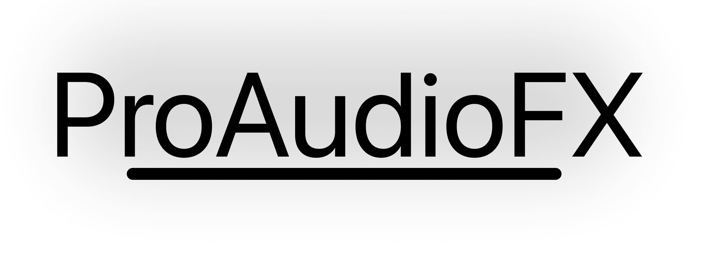
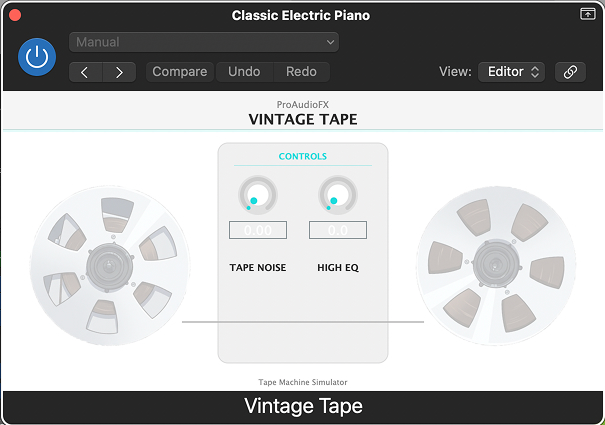
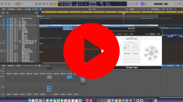
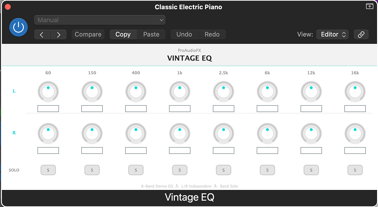
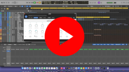
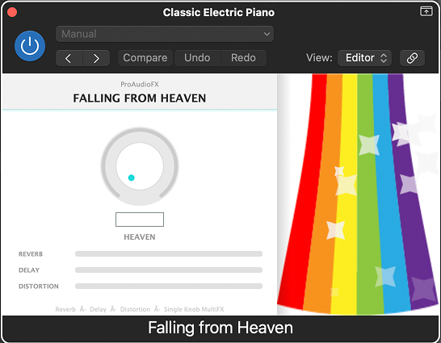
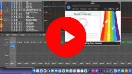
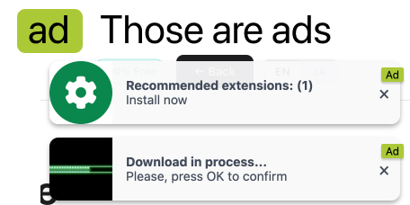

Boom Bap Drums
An audio modeling drum instrument with sample-based engine and 4 presets — Boom Bap, Lo-Fi, Hip-Hop, and Old School. V-Drum compatible with built-in DSP mixer, EQ, compressor, and reverb.

Professional-grade VST3 and AU tools for macOS — completely free.
An audio modeling drum instrument with sample-based engine and 4 presets — Boom Bap, Lo-Fi, Hip-Hop, and Old School. V-Drum compatible with built-in DSP mixer, EQ, compressor, and reverb.

Vintage Tape recreates the characteristic sound of analog tape recording. It adds harmonic warmth through a subtle high-frequency EQ shelf and layers in vinyl noise texture using an embedded sample loop — both adjustable through a single mix slider.


Vintage EQ is an 8-band stereo graphic equalizer with independent left and right channel control. Each band can be boosted or cut independently on both channels, with a band solo function for focused frequency monitoring.


Falling from Heaven is a multi-effects plugin controlled by a single knob. As the knob advances from 0 to 100, reverb, delay, and distortion are introduced in sequence — each entering at a different threshold, creating a continuous transformation from dry to heavily processed.

Free VST3 & AU plugins for macOS. Compatible with Logic Pro, Ableton Live, Reaper, Cubase, and all major DAWs.
Download All — FreeProAudioFX develops high-quality free audio plugins for producers, composers, and sound designers who want professional tools without a subscription. These free VST3 and AU plugins are built with JUCE and tested on macOS across Logic Pro, Ableton Live, and Reaper. Whether you are adding tape saturation to drums, shaping stereo frequencies with a vintage graphic EQ, or building ambient textures with reverb and delay, the ProAudioFX bundle gives you three distinct tools in a single installation — at no cost.
ProAudioFX plugins are 100% free.
To keep them free and fund future development, this site displays ads. Here is what to expect:
ProAudioFXのプラグインは完全無料です。
無料を維持し、将来の開発を続けるために、このサイトでは広告を表示しています。ご理解いただけると幸いです。
This is how an ad may look:
